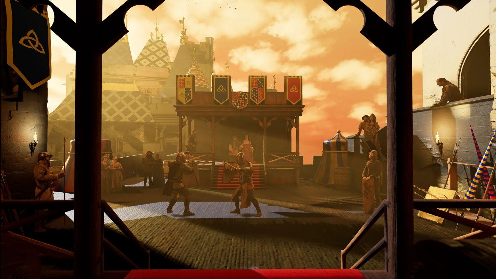

VR Environments
Tururut · Technical Artist / Developer
Rol multidisciplinar creando entornos 3D para realidad virtual en UE5 y Blender, optimizados para la comodidad y el rendimiento en visores.


En VR cada fotograma cuenta y cualquier error visual puede marear. El trabajo consistía en equilibrar un espacio medieval creíble con un framerate estable.
Qué hice
- Entornos: geometría limpia, draw calls controlados y LODs, sin efectos que puedan causar mareo.
- Texturizado: PBR con Substance Painter y materiales procedurales con Substance Designer.
- Iluminación: iluminación y post-proceso en UE5.
- Código: scripts de lógica e interacción en Unity / C#.
- VFX: sistemas de partículas con Niagara.
- Web: front-end integrado en proyectos interactivos.